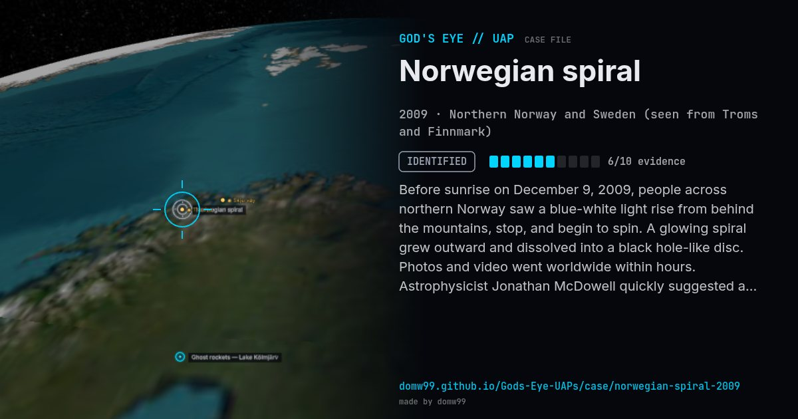

Norwegian spiral

Before sunrise on December 9, 2009, people across northern Norway saw a blue-white light rise from behind the mountains, stop, and begin to spin. A glowing spiral grew outward and dissolved into a black hole-like disc. Photos and video went worldwide within hours. Astrophysicist Jonathan McDowell quickly suggested a failed Russian missile, and Moscow confirmed a Bulava test failure.
Explanation
A failed test of a Russian RSM-56 Bulava submarine-launched missile from the White Sea: the third stage malfunctioned, and the spinning missile sprayed fuel in a spiral lit by the Sun. The Russian Defence Ministry confirmed the failure the next day.
What was seen
Shape: Blue beam with an expanding white spiral
Witnesses: Thousands across northern Norway and Sweden
Duration: About 10 minutes